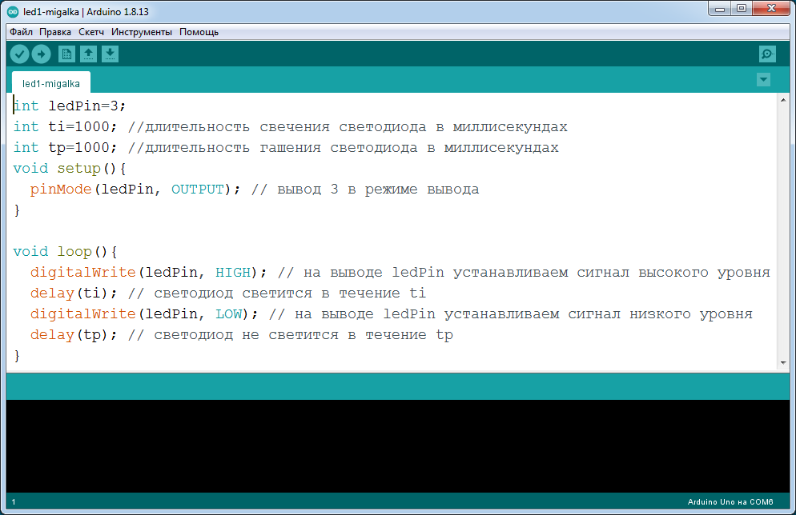
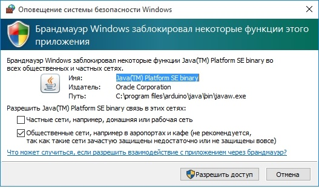
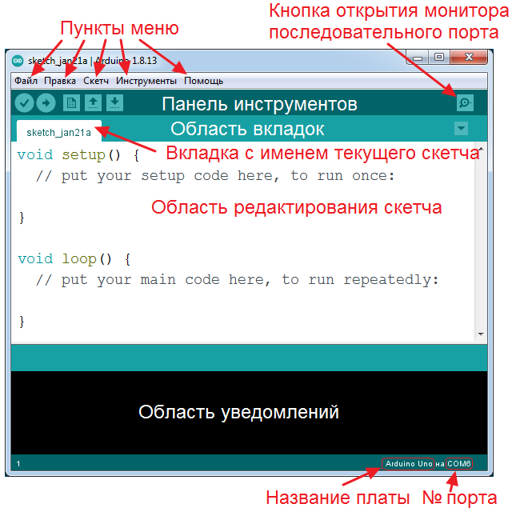
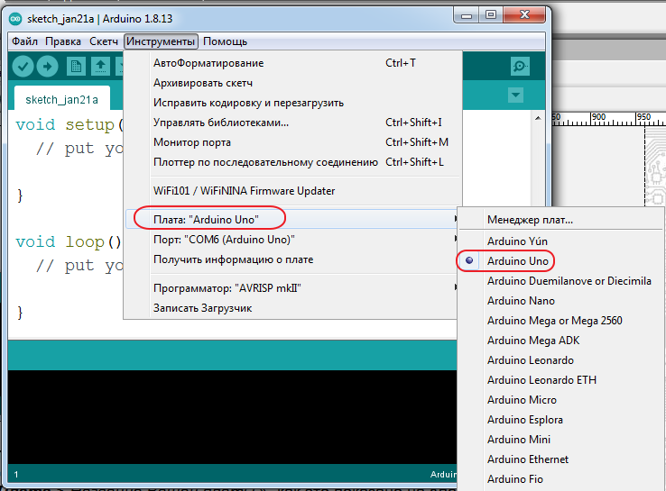
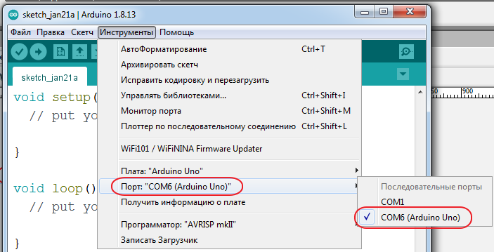
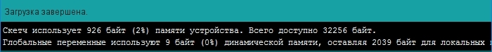

Установка Arduino IDE
Arduino IDE — программа предназначена для программирования Arduino (далее под словом Arduino мы будем иметь в виду саму плату, будь то MEGA, Nano, Micro, Mini, Uno, Duemelanove или любая другая).

Среду программирования Arduino IDE можно скачать в сети Internet (например, https://arduino-ide.com/) и установить. Подробно об установке Arduino IDE можно узнать здесь.
После установки программы, возможно потребуется перезагрузка компьютера.
Если установка программа прошла успешно, на рабочем столе Windows должна появиться иконка программы (рис. 2).
После установки соедините USB-кабелем плату Arduino UNO и компьютер.
При первом запуске программы может появиться сообщение Брандмауэра Windows о блокировке доступа для некоторых сетевых функций Java Arduino IDE (рис. 3).

Разрешите доступ нажав на кнопку «Разрешить доступ». После этого, данное окно появляться не будет.
После запуска откроется окно программы Arduino IDE с шаблоном скетча. На рис. 4 показаны основные элементы программы Arduino IDE.

Перед загрузкой скетча в Arduino необходимо указать программе Arduino IDE, какая плата Arduino подключена, и к какому порту. Для этого выберите нужную плату из списка в меню Инструменты → Плата → Название платы (рис. 5)

После этого нужно выбрать COM-порт к которому подключена Ваша плата Arduino. Для этого выберите нужный COM-порт из списка доступных в меню Инструменты →Порт COM → Номер доступного порта (рис. 6).

Теперь скетч можно загрузить в контроллер платы Arduino. Для этого выберите пункт меню Скетч → Загрузка или нажмите на кнопку Загрузка на панели инструментов.
Во время загрузки в строке состояния будет отображаться ход выполнения компиляции и загрузки скетча. Если в скетче нет ошибок и он успешно загружен, то в области уведомлений появится информация о количестве использованной и доступной памяти Arduino, а над областью уведомлений появится надпись «Загрузка завершена» (рис. 7).

Источники
arduinokit.ru - Руководство по ARDUINO. Установка ARDUINO IDE
wiki.iarduino.ru - Установка/настройка программной оболочки Arduino IDE для Windows
arduinomaster.ru - Скачать Arduino IDE бесплатно и на русском